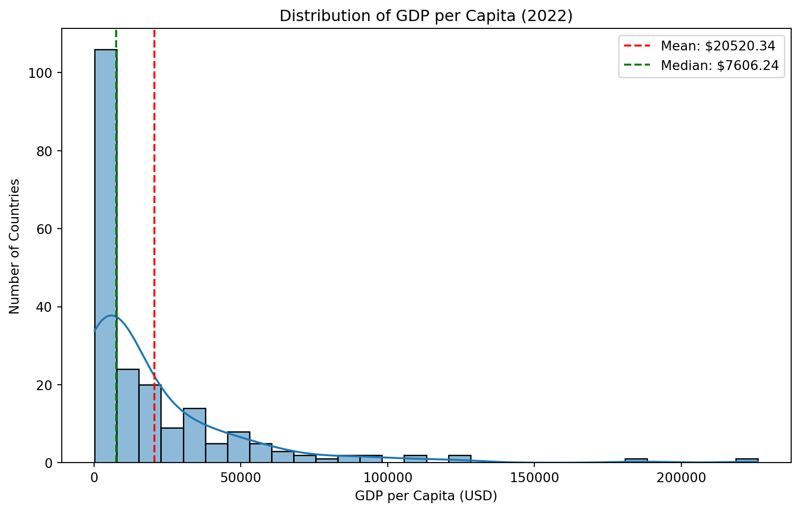
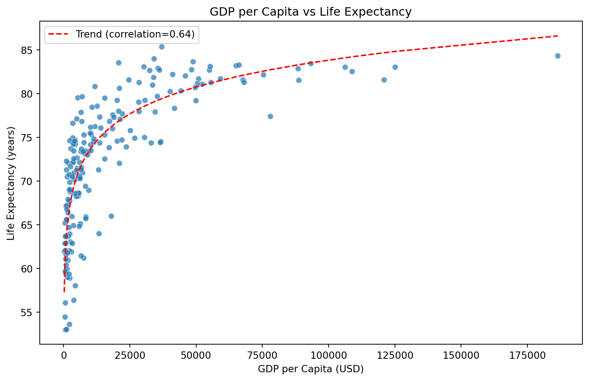
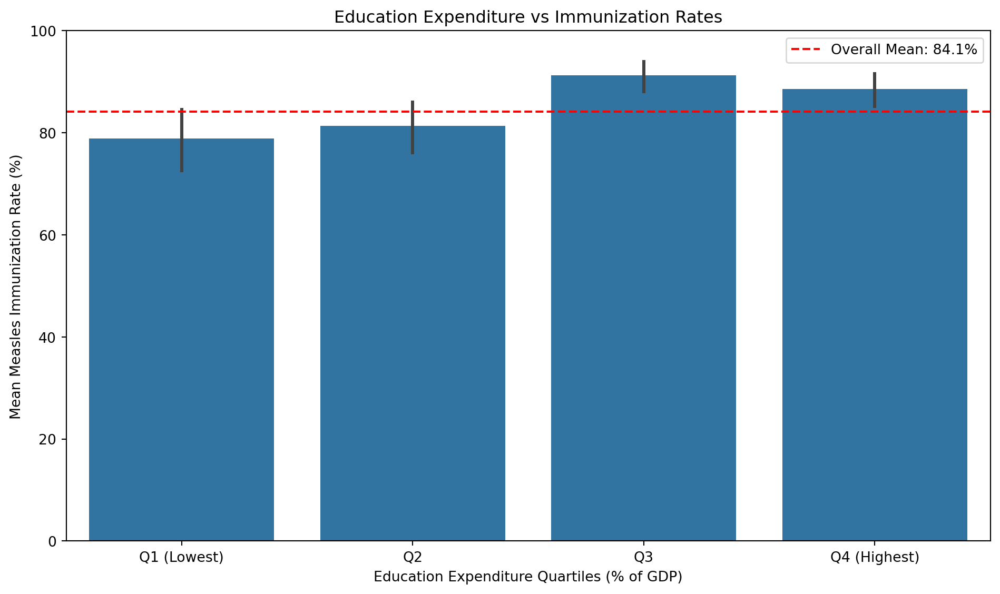

This report analyzes the World Development Indicators dataset from 2022, focusing on key developmental metrics across different countries.
Loading the Data
Code
import pandas as pdimport numpy as npimport seaborn as snsimport matplotlib.pyplot as plt# Read the datasetdf = pd.read_csv('wdi.csv')df
country
inflation_rate
exports_gdp_share
gdp_growth_rate
gdp_per_capita
adult_literacy_rate
primary_school_enrolment_rate
education_expenditure_gdp_share
measles_immunisation_rate
health_expenditure_gdp_share
income_inequality
unemployment_rate
life_expectancy
total_population
0
Afghanistan
NaN
18.380042
-6.240172
357.261153
NaN
NaN
NaN
56.0
NaN
NaN
14.100
62.879000
40578842.0
1
Albania
6.725203
37.197085
4.826688
6846.426143
98.500000
96.371231
2.744330
86.0
NaN
NaN
10.137
76.833000
2777689.0
2
Algeria
9.265516
30.808979
3.600000
4961.552577
NaN
108.343933
4.749247
79.0
NaN
NaN
12.346
77.129000
45477389.0
3
American Samoa
NaN
46.957520
1.735016
18017.458938
NaN
NaN
NaN
NaN
NaN
NaN
NaN
NaN
48342.0
4
Andorra
NaN
NaN
9.564612
42414.059009
NaN
90.147346
2.647290
98.0
NaN
NaN
NaN
NaN
79705.0
...
...
...
...
...
...
...
...
...
...
...
...
...
...
...
212
Virgin Islands (U.S.)
NaN
97.367295
-1.311232
44320.909186
NaN
NaN
NaN
NaN
NaN
NaN
13.007
80.319512
105413.0
213
West Bank and Gaza
3.741224
18.436253
4.082760
3799.955270
98.000000
91.764587
NaN
97.0
NaN
NaN
24.420
73.444000
5043612.0
214
Yemen, Rep.
NaN
NaN
NaN
615.702079
NaN
NaN
NaN
53.0
NaN
NaN
17.363
63.720000
38222876.0
215
Zambia
10.993204
40.193998
5.211224
1447.123101
NaN
NaN
3.582595
90.0
NaN
51.5
5.995
61.803000
20152938.0
216
Zimbabwe
104.705171
27.872171
6.139263
2040.552459
89.849998
95.789907
NaN
90.0
NaN
NaN
10.087
59.391000
16069056.0
217 rows × 14 columns
Exploratory Data Analysis
GDP Per Capita Analysis
Code
# Display basic statistics for GDP per capitagdp_stats = df['gdp_per_capita'].describe()print("GDP per capita statistics:")print(gdp_stats)# Create a histogramplt.figure(figsize=(10, 6))sns.histplot(df['gdp_per_capita'].dropna(), bins=30, kde=True)plt.title('Distribution of GDP per Capita (2022)')plt.xlabel('GDP per Capita (USD)')plt.ylabel('Number of Countries')plt.axvline(df['gdp_per_capita'].mean(), color='red', linestyle='--', label=f'Mean: ${df["gdp_per_capita"].mean():.2f}')plt.axvline(df['gdp_per_capita'].median(), color='green', linestyle='--', label=f'Median: ${df["gdp_per_capita"].median():.2f}')plt.legend()plt.show()
GDP per capita statistics:
count 207.000000
mean 20520.336828
std 30640.741594
min 250.634225
25% 2599.752468
50% 7606.237525
75% 27542.145523
max 226052.001905
Name: gdp_per_capita, dtype: float64

Figure 1: Distribution of GDP per capita across countries
The distribution of GDP per capita in Figure 1 shows significant inequality across countries. We observe: - A strong positive skew, with many countries clustered at lower GDP values - A long tail extending to higher-income countries - A substantial difference between mean and median values, further indicating skewed distribution - Several outlier countries with exceptionally high GDP per capita
Life Expectancy Analysis
Code
# Calculate correlationcorrelation = df['gdp_per_capita'].corr(df['life_expectancy'])# Create scatter plotplt.figure(figsize=(10, 6))sns.scatterplot(data=df, x='gdp_per_capita', y='life_expectancy', alpha=0.7)plt.title('GDP per Capita vs Life Expectancy')plt.xlabel('GDP per Capita (USD)')plt.ylabel('Life Expectancy (years)')# Add a logarithmic trendlinex = df['gdp_per_capita'].dropna()y = df['life_expectancy'].dropna()mask =~np.isnan(x) &~np.isnan(y)x = x[mask]y = y[mask]iflen(x) >0: z = np.polyfit(np.log(x+1), y, 1) p = np.poly1d(z) x_sorted = np.sort(x) plt.plot(x_sorted, p(np.log(x_sorted+1)), "r--", label=f"Trend (correlation={correlation:.2f})") plt.legend()plt.show()

Figure 2: Relationship between GDP per capita and life expectancy
Our scatterplot shown in Figure 2 reveals: - A strong positive correlation between GDP per capita and life expectancy - The relationship appears logarithmic rather than linear, suggesting diminishing returns - Life expectancy tends to plateau at higher income levels - There is still significant variation in life expectancy among countries with similar GDP levels, suggesting other factors play important roles
Education and Health Indicators
Code
# Create quartiles of education expenditure for grouped analysisdf['edu_quartiles'] = pd.qcut(df['education_expenditure_gdp_share'].dropna(), 4, labels=['Q1 (Lowest)', 'Q2', 'Q3', 'Q4 (Highest)'])# Simple bar chart comparing education quartiles to immunization ratesplt.figure(figsize=(10, 6))sns.barplot(x='edu_quartiles', y='measles_immunisation_rate', data=df.dropna(subset=['edu_quartiles', 'measles_immunisation_rate']))plt.title('Education Expenditure vs Immunization Rates')plt.xlabel('Education Expenditure Quartiles (% of GDP)')plt.ylabel('Mean Measles Immunization Rate (%)')plt.ylim(0, 100) # Set y-axis to percentage scaleplt.axhline(y=df['measles_immunisation_rate'].mean(), color='r', linestyle='--', label=f'Overall Mean: {df["measles_immunisation_rate"].mean():.1f}%')plt.legend()plt.tight_layout()plt.show()

Figure 3: Relationship between education expenditure and immunization rates
As shown in Figure 3, there is a relationship between a country’s investment in education and public health outcomes: - Countries in higher education expenditure quartiles generally show better immunization coverage - The trend suggests that investment in education may have positive spillover effects on health outcomes - This correlation could reflect broader government priorities in human development - The difference between the lowest and highest quartiles demonstrates how resource allocation impacts population health
Table 1: Summary Statistics of Key Development Indicators
gdp_per_capita
life_expectancy
education_expenditure_gdp_share
measles_immunisation_rate
count
207.000000
209.000000
137.000000
193.000000
mean
20520.336828
72.416519
4.164884
84.103627
std
30640.741594
7.713322
1.771027
15.413050
min
250.634225
52.997000
0.348517
33.000000
25%
2599.752468
66.782000
2.951592
76.000000
50%
7606.237525
73.514634
3.938396
90.000000
75%
27542.145523
78.475000
4.959176
96.000000
max
226052.001905
85.377000
10.703345
99.000000
gdp_per_capita
life_expectancy
education_expenditure_gdp_share
measles_immunisation_rate
gdp_per_capita
1.00
0.64
-0.09
0.32
life_expectancy
0.64
1.00
0.05
0.56
education_expenditure_gdp_share
-0.09
0.05
1.00
0.24
measles_immunisation_rate
0.32
0.56
0.24
1.00
Table Table 1 highlights key statistics from the analysis, highlighting the range and distribution of development indicators across countries. The standard deviations across all metrics underscore the global inequality in development outcomes.
Conclusion
This analysis of World Development Indicators reveals several important patterns in global development: 1. Economic prosperity, as measured by GDP per capita, remains highly unequal across countries 2. There is a strong but non-linear relationship between economic development and health outcomes 3. Countries that invest more in education tend to have better health outcomes
Patel, Mahendra, Ankit Patel, and Priya Desai. 2021. Handbook of Development Indicators and Benchmarks: A Statistical Guide to the World’s Development Goals. Oxford, UK: Oxford University Press.